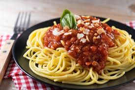

Pasta Bolognese recipe.

Description
This easy Pasta Bolognese recipe features a hearty ground beef sauce served over long pasta. The sauce is simple to make in one pot!
Ingredients
- Olive oil
- Onion
- Celery
- Carrots
- Garlic (2 teaspoons jarred minced or 1 teaspoon garlic powder)
- Lean ground beef (83% lean or higher)
- Whole milk
- Crushed tomatoes
- Tomato paste
- Salt
- Black pepper
- Bay leaf
- Oregano (or 1 teaspoon dried thyme, basil, marjoram, or Italian seasoning)
- Nutmeg (or ⅛ teaspoon allspice)
- Tagliatelle pasta
- Chopped parsley
Steps
-
Sweat the onions, celery, carrots, and garlic in a large pot on the stovetop.
-
Add the ground beef and season with salt and pepper.
-
Break up the beef and cook until it’s browned, stirring occasionally.
-
Stir in the milk and simmer until it mostly evaporates.
-
Add the crushed tomatoes, tomato paste, and remaining seasonings.
-
Bring the mixture to a boil, then simmer on low, uncovered, until the sauce is thick and flavorful.